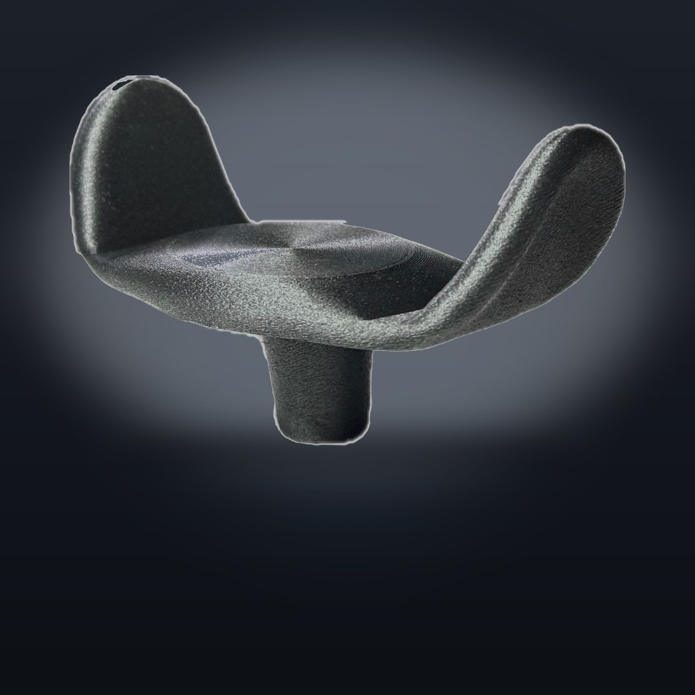

Carbon Fiber Goalpost Joystick Topper
An open U-shape grip that replaces the standard joystick knob, designed by a wheelchair user.

Most joysticks ship with a small round knob you have to pinch and squeeze. This replaces it with an open, U-shaped surface that is easier to live with all day.
- Open goalpost shape, nothing to pinch or squeeze
- Carbon fiber reinforced nylon, not soft plastic
- Fits most standard joystick stems, about 6.4 mm
- Unlimited lifetime warranty
You can purchase the product here.
Designed and 3D printed to order in Saint Johns, Florida.
How It Fits
It is a press-on upgrade, not an install. Here is the whole process.
Measure your stem
Standard power wheelchair joystick stems are about 6.4 mm across. Measure yours with calipers or a ruler before ordering.
Press it on
The topper presses firmly onto the stem by hand. No tools, no adhesive, and no dealer appointment.
Drive your way
Steer with an open hand, the side of your hand, your wrist, or a light grip. Pop it back off any time.
Who It Is For
People reach for the goalpost shape for all kinds of reasons.
- Drivers who find the stock round knob hard to hold or tiring over a long day
- Anyone who wants a steadier, more comfortable place to rest the hand
- A swappable upgrade you can add yourself, with no dealer and no prescription
How It Is Made
Each topper is 3D printed to order from carbon fiber reinforced nylon, an engineering material (PAHT-CF) that is stiff, strong, and light. It stands up to daily use far better than the soft plastic on a stock knob.
We print on a state of the art multi material machine, check quality on every print, and tune each profile for strength and durability. The finish is a clean matte black, and the part is built to last.
Questions
Will it fit my joystick?
How do I put it on?
What does the warranty cover?
Where does it ship from?
This is an aftermarket accessory, not an FDA-cleared medical device. Rockstar Health is not affiliated with any wheelchair manufacturer.